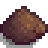
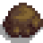
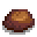
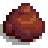
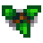
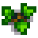
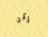
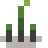

Quarry

- This article is about the Pelican Town quarry. For Ginger Island, see Ginger Island#Dig Site.
The Quarry consists of a large area with a wide selection of rocks and mining nodes that are randomly generated. Each day there is a chance that new rocks and nodes as well as oak and maple tree seeds will be generated. It is part of the same map as the Mountain, therefore it has the same forageable items and Artifact Spot contents as the Mountain.
The Quarry is unlocked by completing the Crafts Room bundles in the Community Center or by purchasing "Bridge" from the Joja Community Development Form for  25,000g. There will be a cut scene that night where the bridge is repaired.
25,000g. There will be a cut scene that night where the bridge is repaired.
The Quarry itself can be home to every ore and gem in the game. However, stones containing valuable items like Iridium Ore or Prismatic Shards are much rarer and the player may have to wait several seasons for new ones to spawn.
The Entrance to the Quarry Mine is on the western side of the quarry, above the bridge. The Minecart can also take the player to the Quarry once the bridge is repaired. (The Minecart is unlocked by either completing the Boiler Room bundles or by purchasing "Minecarts" from the Joja Community Development Form at JojaMart for  15,000g.)
15,000g.)
Spawning
Each day new rocks, nodes, oak and maple seeds will spawn. In year 1, the game attempts to add 7 things from the table below. This increases by 2 each year up to a maximum of 16. Existing rocks block new spawns, so it is wise to keep the quarry entirely cleared.[1]
| Rock Type | Chance |
|---|---|
    Rock |
45.1% |
| 22.6% | |
| 7.99% | |
| 7.52% | |
  Oak or Maple Tree |
6% |
| 3.94% | |
 Artifact Spot |
3.13% |
| 1.33% | |
 Seed Spot |
0.553% |
| 0.242% | |
| 0.242% | |
| 0.242% | |
| 0.242% | |
| 0.242% | |
| 0.242% | |
| 0.242% | |
| 0.188% | |
| 0.0133% |
Usable Space
This image shows the usable space in the Quarry. Colored tiles (yellow or blue) can be used to place paths, artisan equipment and refining equipment. Yellow tiles (tillables) may also be used to plant common trees.
Villagers do not travel through the Quarry or on its bridge, so items placed there are safe from destruction.
Gallery
The Quarry in Spring

A Mystic Stone found in the Quarry
Upon mining a Mystic Stone
References
- ↑ See Mountain::quarryDayUpdate in the game code.
History
- 1.4: Bombs no longer cause ore nodes to drop stone. Bombs now destroy gem nodes. The Quarry now spawns oak and maple trees. Added the Quarry Mineshaft to the Quarry.
- 1.6: Coal Nodes can now appear in the Quarry. Quarry production now increases yearly.
| Locations | |
|---|---|
| Locations | Backwoods • Beach • Bus Stop • Calico Desert • Cindersap Forest • Farm • Farm Cave • Farm Pond • Graveyard • Ginger Island • Mastery Cave • Minecart • Mines • Mountain • Mutant Bug Lair • Pelican Town • Quarry • Quarry Mine • Railroad • Secret Woods • Sewers • Skull Cavern • Summit • Tunnel • Volcano Dungeon • Witch's Swamp |